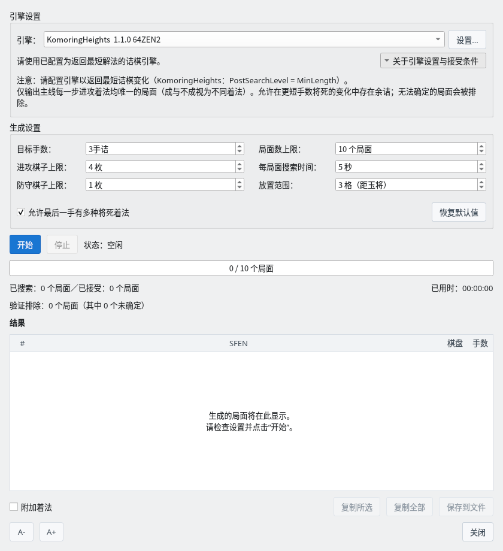
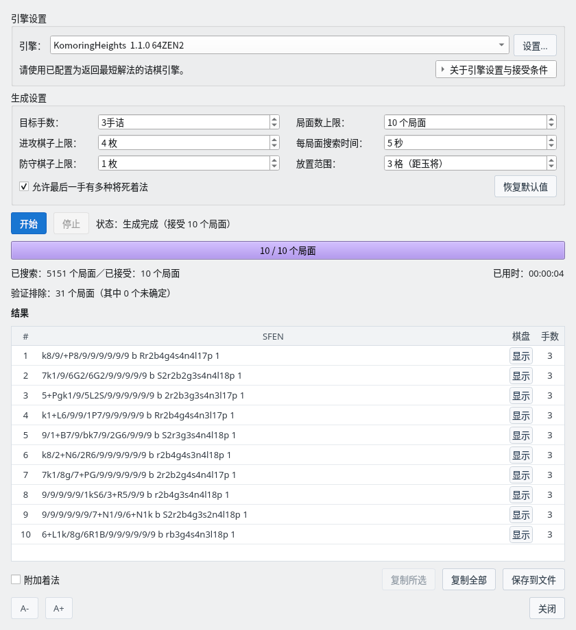
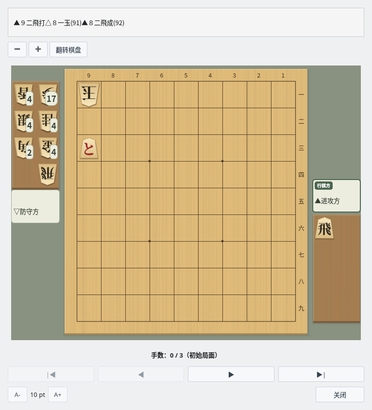

诘棋局面生成器
从随机局面出发，用 USI 引擎确认诘杀，自动生成诘棋
截图在 Linux 上以简体中文界面拍摄。
概要
随机制作诘棋候选局面，检查诘杀与余诘后输出
功能特点
诘棋局面生成器会自动完成以下处理。
- 随机生成诘棋候选局面
- 用内置的诘棋搜索筛选候选，再用 USI 引擎（
go mate）确认指定手数的诘杀 - 检查主线的余诘和多余棋子，只输出满足条件的局面
- 以 SFEN 格式列出结果，可以保存到文件或复制到剪贴板
诘棋搜索可以使用 komori-n 开发并公开的诘棋引擎 KomoringHeights。请另行准备引擎，在“设置”→“引擎设置…”中注册（引擎注册指南），然后在生成对话框的“引擎”中选择。请使用返回最短手顺的设置（KomoringHeights 为 PostSearchLevel = MinLength，即默认值）。
生成设置
在生成对话框中设置条件并开始生成
诘棋局面生成器对话框
选择“对局”→“诘棋局面生成器…”打开对话框，确认引擎和生成设置后点击“开始”。设置下次也会沿用。

诘棋局面生成器对话框：展开“关于引擎设置与接受条件”的状态
| 项目 | 说明 |
|---|---|
| 引擎 | 用于诘棋搜索的 USI 引擎。点击“设置...”可以更改所选引擎的选项。 |
| 目标手数 | 生成的诘棋手数（奇数）。默认是 3 手诘。 |
| 进攻棋子上限 | 进攻方棋盘上的棋子与持驹合计枚数的上限。默认是 4 枚。 |
| 防守棋子上限 | 除玉以外，防守方棋盘上棋子枚数的上限。默认是 1 枚。 |
| 局面数上限 | 接受的局面达到这个数量后结束。默认是 10 个局面；设为 0（不限）时会一直生成，直到停止。 |
| 每局面搜索时间 | 候选局面及移除棋子后的诘棋搜索、以及各自完整的余诘检查所用的时间。默认是 5 秒，未能在时间内完成检查的局面不会被接受。 |
| 放置范围 | 以玉为中心放置进攻棋子的范围（格数）。默认是 3 格。 |
| 允许最后一手有多种将死着法 | 开启时，即使主线最后一手有多种将死着法也会接受（1 手诘的第一手除外）。关闭时，只输出最后一手也唯一的局面。第一手等主线中途的余诘始终会被排除。 |
| 恢复默认值 | 将生成设置恢复为默认值。 |
点击“关于引擎设置与接受条件”可以展开或收起关于引擎设置和接受条件的说明。
生成过程中可以点击“停止”停止生成。停止后，已接受的局面仍可保存和复制。
随机局面的生成方式
局面按以下步骤自动制作。
- 将后手的玉放在 9×9 棋盘上的随机位置
- 在玉的周围放置进攻棋子（随机分配到棋盘上或持驹）
- 在玉的周围放置防守棋子
- 省略进攻方的玉，其余未使用的棋子全部加入防守方（后手）的持驹
- 确认初始局面中玉没有被将军
制作出的局面先由内置的诘棋搜索筛选，排除已知在目标手数内不能将死的局面，以及找到多个将死第一手的局面。内置搜索无法判定的候选也会发送给 USI 引擎，只有引擎确认了指定手数诘杀的局面才会进入余诘检查。“已搜索”的局面数也包括被内置搜索排除的局面。
生成结果
接受的诘棋会加入结果列表
结果列表
找到指定手数的诘杀后，完成多余棋子修剪和余诘检查的局面会加入结果列表。进度条显示已接受的局面数与局面数上限，下方显示已搜索和已接受的局面数、已用时间，以及验证排除的局面数（其中未确定的数量）。

生成结果：以默认设置接受了 10 个 3 手诘局面
| 操作 | 说明 |
|---|---|
| 显示（“棋盘”列） | 在主要变化显示窗口中确认局面和诘杀手顺。双击该行或按 Enter 键也可以打开。 |
| 附加着法 | 开启时，保存和复制的 SFEN 后面会加上 moves 和 USI 格式的诘杀手顺。 |
| 复制所选 | 将选择的局面复制到剪贴板（Ctrl+C）。按住 Ctrl 或 Shift 键可以多选。 |
| 复制全部 | 将所有局面复制到剪贴板。 |
| 保存到文件 | 保存为文本文件。文件开头会以“#”开头的注释行记录 ShogiBoardQ 的版本、生成日期时间和生成设置。SFEN 局面集查看器和诘棋练习读取时会跳过注释行。 |
修剪多余棋子
修剪多余棋子会自动移除随机局面中的“装饰棋子”（移除后不影响诘杀手顺的棋子）。
- 逐枚尝试移除棋盘上进攻方与防守方的棋子，以及进攻方的持驹
- 如果移除后仍保持目标手数的诘杀和主线的唯一性，就确定移除
- 移除的棋子移到防守方的持驹中，保持棋子总数不变
- 每移除一枚就重新检查，把新变得多余的棋子也移除
- 移除后的检查超时或无法判定的题目，以及因停止或错误而中断修剪的题目不会输出
这里确认的是“移除任意一枚棋子后，是否仍成立同样条件的诘棋”。不保证同时移除多枚棋子或改变布局时的最少棋子数。
确认诘杀手顺
在棋盘上确认生成的诘棋手顺
主要变化显示窗口
在结果列表中点击“显示”，即可打开主要变化显示窗口。上方显示诘杀手顺，下方显示局面，对局者为进攻方和防守方。点击“▶”逐手前进，点击“▶|”前进到诘杀的局面。操作详情请参阅诘棋搜索的主要变化显示。

主要变化显示：生成的 3 手诘的初始局面（手数 0 / 3）
用 CLI 生成诘棋
从准备 generate-tsume，到用 Python 并行运行、保存和重新验证
准备 CLI 和诘棋搜索引擎
generate-tsume 使用与 GUI 相同的生成处理，以 JSON Lines 输出已检查指定手数诘杀、主线余诘和多余棋子的局面。可以从 Python 直接以子进程启动 CLI，无需启动 MCP 服务器。
以下是使用 Linux shell 和 Python 3 的示例，请在仓库根目录执行。从源码准备的方法请参阅在 Linux 上构建（英文）。在 Windows 等环境中，请根据环境更改 CLI 可执行文件的名称和路径。
构建 CLI 并确认已注册的引擎
cmake -B build -S . -DCMAKE_BUILD_TYPE=Release
cmake --build build --target shogiboardq-cli --parallel 4
./build/shogiboardq-cli list-engines请先注册引擎，选择支持 go mate 的引擎。--engine 指定的不是可执行文件路径，而是 list-engines 返回的注册名称。下面的名称只是示例，请连同空格一起替换为实际的注册名称。
使用 KomoringHeights 时，可以在引擎设置中把 Threads=1、USI_Hash=256、PostSearchLevel=MinLength、GenerateAllLegalMoves=true 作为并行运行的初始设置。支持的选项名称和值请在所用引擎中确认。
生成一批并确认 JSON Lines
先生成最多 10 题 3 手诘，确认引擎设置和输出。标准输出的 JSON Lines 与带手顺的题集文本是不同的格式。
生成最多 10 题 3 手诘
./build/shogiboardq-cli generate-tsume \
--engine 'KomoringHeights 1.1.0 64ZEN2' \
--target-moves 3 --max-positions 10 \
--timeout-ms 5000 --max-attack 4 --max-defend 1 \
--attack-range 3 --stdin-control > tsume-batch.jsonl| 选项 | 含义与取值范围 |
|---|---|
--target-moves | 目标手数。1～19 的奇数，默认 3 |
--max-positions | 一次启动生成的上限。1～100，默认 10 |
--timeout-ms | 候选搜索、移除棋子和余诘检查所用的时间预算。500～60000 毫秒，默认 5000 |
--max-attack | 进攻方棋盘上与持驹合计的上限。1～10，默认 4 |
--max-defend | 玉以外防守方棋盘上棋子的上限。0～10，默认 1 |
--attack-range | 以玉为中心放置进攻棋子的范围。1～8 格，默认 3 |
--stdin-control | 标准输入收到 stop 行或 EOF 时停止 |
--no-final-alternatives | 最后一手有多种解时也不接受。省略时允许最后一手有多种解 |
--no-remaining-to-hand | 不把未使用的棋子加入防守方持驹。一般的诘棋请省略 |
started 表示设置，progress 表示生成、发现、排除和未确定的数量，position 表示接受的局面，finished 表示结束。要保存的局面和手顺从 position.sfen 和 position.pv（USI 着法数组）中取出。也请确认 error 事件和进程的退出码。
position 事件的主要字段
{"event":"position","sfen":"9/8k/7P1/9/7R1/9/9/9/9 b r2b4g4s4n4l17p 1","pv":["2c2b+","1b1c","2e2c+"]}加上 --stdin-control 时，在终端输入 stop 并按 Enter 即可停止。关闭标准输入也会停止，因此 Python 中要一直保持 stdin=PIPE 打开。在一开始就关闭输入的运行环境中，生成可能会立即结束。
从 Python 并行运行并保存中间结果
将下面的代码保存为 generate_tsume_parallel.py，在仓库根目录执行 python3 generate_tsume_parallel.py。不需要额外的 Python 包。请先用 TARGET=10、WORKERS=1 确认，如果 CPU 和内存有余量再增加并行数。
PLIES 是手数，TARGET 是所有工作进程合计的收集目标，WORKERS 是同时启动的数量。TIMEOUT_MS、棋子数和放置范围也可以在开头更改。超过 100 题时，也会把每批的上限控制在 100 以内，反复收集不足的部分。
显示 Python 代码（以 4 个并行收集 100 题 3 手诘）
generate_tsume_parallel.py
import asyncio
import json
import os
from pathlib import Path
CLI = str(Path("build/shogiboardq-cli").resolve())
ENGINE = "KomoringHeights 1.1.0 64ZEN2" # Use the exact name from list-engines
PLIES = 3
TARGET = 100
WORKERS = 4
TIMEOUT_MS = 5000
MAX_ATTACK = 4
MAX_DEFEND = 1
ATTACK_RANGE = 3
ALLOW_FINAL_ALTERNATIVES = True
OUTPUT = Path(f"tsume-work/tsume_{PLIES}ply_candidates.txt")
ENV = dict(os.environ)
# Optional: use a separately prepared configuration on Linux
# ENV["XDG_CONFIG_HOME"] = "/path/to/tsume-config"
positions = {}
active = set()
def remember(sfen, pv):
fields = sfen.split()
if len(fields) != 4 or len(pv) != PLIES:
raise ValueError("Invalid SFEN or PV length")
key = " ".join(fields[:3]) # Board, turn, and hands; ignore the move number
if key not in positions and len(positions) < TARGET:
positions[key] = sfen + " moves " + " ".join(pv)
def checkpoint():
temporary = OUTPUT.with_suffix(".tmp")
text = "# CLI candidates (before independent collection validation)\n"
text += "\n".join(positions.values()) + "\n"
temporary.write_text(text, encoding="utf-8")
temporary.replace(OUTPUT)
async def stop(process):
if process.returncode is None:
try:
process.stdin.write(b"stop\n")
await process.stdin.drain()
except (BrokenPipeError, ConnectionResetError):
pass
async def close_process(process):
await stop(process)
try:
await asyncio.wait_for(process.wait(), timeout=15)
except asyncio.TimeoutError:
process.kill()
await process.wait()
active.discard(process)
async def worker(number):
while len(positions) < TARGET:
args = [
CLI, "generate-tsume", "--engine", ENGINE,
"--target-moves", str(PLIES),
"--max-positions", str(min(100, TARGET - len(positions))),
"--timeout-ms", str(TIMEOUT_MS),
"--max-attack", str(MAX_ATTACK), "--max-defend", str(MAX_DEFEND),
"--attack-range", str(ATTACK_RANGE), "--stdin-control",
]
if not ALLOW_FINAL_ALTERNATIVES:
args.append("--no-final-alternatives")
log_path = OUTPUT.parent / f"worker-{PLIES}ply-{number}.jsonl"
err_path = OUTPUT.parent / f"worker-{PLIES}ply-{number}.stderr.log"
with log_path.open("a", encoding="utf-8") as log, err_path.open("ab") as err:
process = await asyncio.create_subprocess_exec(
*args, env=ENV,
stdin=asyncio.subprocess.PIPE,
stdout=asyncio.subprocess.PIPE, stderr=err,
)
active.add(process)
try:
# Another worker may have reached the target during startup.
if len(positions) >= TARGET:
await stop(process)
async for raw in process.stdout:
line = raw.decode("utf-8")
log.write(line)
log.flush()
event = json.loads(line)
if event["event"] == "error":
raise RuntimeError(event["message"])
if event["event"] != "position":
continue
remember(event["sfen"], event["pv"])
checkpoint()
print(f"{len(positions)}/{TARGET}", flush=True)
if len(positions) == TARGET:
await asyncio.gather(*(stop(p) for p in list(active)))
if await process.wait() != 0:
raise RuntimeError(f"CLI failed; see {err_path}")
finally:
await close_process(process)
async def main():
if TARGET < 1 or WORKERS < 1:
raise ValueError("TARGET and WORKERS must be positive")
OUTPUT.parent.mkdir(parents=True, exist_ok=True)
if OUTPUT.exists():
for line in OUTPUT.read_text(encoding="utf-8").splitlines():
if line and not line.startswith("#"):
sfen, moves = line.split(" moves ", 1)
remember(sfen, moves.split())
tasks = [asyncio.create_task(worker(i)) for i in range(WORKERS)]
try:
await asyncio.gather(*tasks)
finally:
for task in tasks:
task.cancel()
await asyncio.gather(*tasks, return_exceptions=True)
await asyncio.gather(*(close_process(p) for p in list(active)))
checkpoint()
print(f"Collected: {OUTPUT} (validate the collection separately)")
if __name__ == "__main__":
asyncio.run(main())所有工作进程共用一个字典，排除棋盘、行棋方和持驹相同的 SFEN。每次发现时通过临时文件替换来保存，重新启动时读回。JSON Lines 和标准错误按手数和工作进程分别保存。收集到所需数量后会向所有 CLI 发送停止请求；中途按 Ctrl+C 时，也可以从已保存的结果继续。
这段代码只负责收集和排除重复的 SFEN，不会排除只有棋子种类不同的相同手顺或左右翻转的相似题目。请另行对整个题集进行独立审核。
运行、停止和继续时的注意事项
- 整体完成时间：
--timeout-ms不是整个命令的时间限制。长手数或严格的设置下接受的题目较少，无法保证达到目标数量所需的时间。请先用少量确认进度，必要时停止并调整条件。未确定的结果既不算无诘，也不算验证成功。 - CPU 与内存：并行数和引擎内的线程数都会影响负载。给 16 个进程各分配 256 MiB 的哈希表时，仅哈希表就约需 4 GiB，此外还需要其他内存。
- 配置文件：看不到在 GUI 中注册的引擎时，请确认是否以同一用户、同一配置运行。在 Linux 上更改
XDG_CONFIG_HOME时，请在其下的ShogiBoardQ/ShogiBoardQ.ini中准备引擎注册和选项，并用同样的环境变量运行list-engines和 Python。 - 继续使用的文件：不要让多个 Python 进程同时更新同一个
OUTPUT。示例代码不会重新验证已有的行，因此更改手数、引擎或余诘条件后，请使用新的输出位置，或重新验证已有的部分。设置也可以在started事件的日志中确认。 - 余诘条件：默认允许主线最后一手的多种解，以及更早将死的变化中的另一种诘法。若要求最后一手也唯一，请设置
ALLOW_FINAL_ALTERNATIVES=False，重新验证时也加上--no-final-alternatives。 - 区分输出：
tsume-batch.jsonl是事件日志。Python 生成的tsume-work/tsume_3ply_candidates.txt是局面和手顺的收集文件。CLI 出错时，请查看该工作进程的 JSON Lines 和标准错误日志。
带手顺文本的格式与重新验证
题集使用 UTF-8，每行保存为 SFEN moves USI着法…。在以 # 开头的注释中记录生成日期、引擎、手数、棋子数与搜索时间、余诘条件，便于日后确认。
3 手诘的保存格式（每行一题）
9/8k/7P1/9/7R1/9/9/9/9 b r2b4g4s4n4l17p 1 moves 2c2b+ 1b1c 2e2c+要重新检查主线的余诘，请使用 verify-tsume。下面是一个局面的示例。重新检查多题时，请依次传入收集文件中的各个 SFEN。
重新检查局面的余诘
./build/shogiboardq-cli verify-tsume \
--engine 'KomoringHeights 1.1.0 64ZEN2' \
--target-moves 3 --timeout-ms 15000 \
--sfen '9/8k/7P1/9/7R1/9/9/9/9 b r2b4g4s4n4l17p 1'JSON 中的 ok 表示命令处理是否成功。要视为合格，还需确认 status 为 unique；unknown 应暂缓或重试。这个命令只检查主线的余诘，不能代替对已保存 PV 的全部着法和全部棋子必要性的审核。
要独立审核题集，可以使用源码中附带的以下工具确认最短手数、合法手顺、主线余诘和全部单枚移除。该工具的 --engine 不是 CLI 的注册名称，而是引擎可执行文件的路径。
独立审核收集文件
cmake -B build -S . -DBUILD_TESTING=ON
cmake --build build --target tsumeshogi_collection_auditor --parallel 4
python3 scripts/audit_tsume_collections.py tsume-work/tsume_3ply_candidates.txt \
--engine /path/to/KomoringHeights-by-gcc \
--output-dir tsume-work/audit-3ply --workers 4 --timeout-ms 30000请确认 summary.json 中的 statuses、unique_minimal、changed。不要把 unknown 计入完成数量，请增加预算重试或将其排除。确认过的结果保存在 tsume_3ply_minimal.txt 中。如果因移除棋子后的重复或排除相似题目导致数量减少，请补充后重新审核。详细的检查条件请参阅题集的 README（日文）。
多余棋子检查确认的是不存在能维持接受条件的单枚移除，不保证同时移除多枚或更改棋子种类时的最少棋子数。
编排不连续出现相似题目的题集
除了验证局面，还要确认解题手顺的相似性和出题顺序
不仅检查局面重复，也检查手顺相似
即使 SFEN 不同，也可能因相同的追杀方式、左右翻转、布局平移、金与成桂等替换而使解法相似。仅靠标准 CLI 和上面 Python 示例的局面去重，无法保证题集的多样性。
用题集编辑工具筛选和补充
scripts/refill_diverse_tsume.py 以已验证的题集为输入，在所有工作进程间共用相似判定并生成不足的部分。它使用与标准 CLI 不同的专用候选生成器和审核器。补充后用 scripts/audit_tsume_collections.py 进行独立审核，判定全部确定后，再用 scripts/publish_diverse_tsume.py 按减少与前 10 题手顺重叠的顺序排列。
相似判定是基于主线的编辑标准，并不能完整判定包含变化和迷惑手在内的作品价值。输入条件、继续、排除和保存的步骤请参阅题集的 README（日文）。